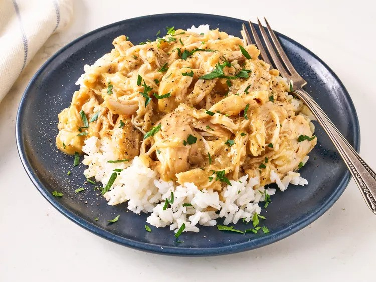

Cooker Chicken Recipe

Description
This slow cooker chicken and gravy could not be easier. You'll want to serve this over hot rice or mashed potatoes for the ultimate comfort food dish.
Ingredients
- 1 (10 1/2 ounce) can cream of chicken soup
- 2 packets chicken gravy mix
- 1/2 cup chicken broth (optional)
- 1/2 teaspoon salt
- 1/2 teaspoon freshly ground black pepper
- 3 to 4 skinless, boneless chicken breasts
Steps
- In a small bowl add the gravy packets, cream of chicken soup, water and pepper. Whisk until smooth.
- Add the chicken breasts to the slow cooker. Pour over the gravy.
- Place the lid on the slow cooker and cook on low for 6-8 hours or high for 4 hours.
- Shred the chicken and serve with desired sides.
Home